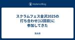
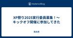
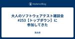
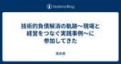

天の月
https://aki-m.hatenadiary.com/
ソフトウェア開発をしていく上での悩み, 考えたこと, 学びを書いてきます(たまに関係ない雑記も)
フィード

スクラムフェス福岡2025で登壇してきた
天の月
スクラムフェス福岡で登壇してきたので、そのふりかえりをしてこようと思います。 confengine.com 発表した内容(スライドは後ほどアップします) 1本目 2本目 発表準備 1本目 2本目 発表後 1本目 2本目 発表した内容(スライドは後ほどアップします) 1本目 confengine.com 2本目 confengine.com 発表準備 1本目 仕事がバタバタしていたこともあり、こちらは何とかなるだろう精神であまり準備をしていませんでした笑 簡単に進行を決めてリハーサルをして、こんな感じでいけそうだよねというのが確認できたのですが、45分通してリハーサルをするというのは必ずやってお…
11時間前

スクラムフェス福岡2025 Day1に参加してきた
天の月
www.scrumfestfukuoka.org 今日からはスクラムフェス福岡に参加しているので、Day1の様子と感想を書いていこうと思います。 19:00-の参加だったのでkeynoteなどは聞き逃してしまいました... 佐野さん、平鍋さん、川西さんと話す 佐野さん、チュンさんと話す チュンさん、おーのAさんと話す チュンさん、ちんもさんと話す ちんもさんと話す ちんもさん、おがさわらさんと話す おがさわらさん、じゅんぺーさん、ひろみつさん、moriyuyaさんと話す moriyuyaさん、おがさわらさんと話す 頭取、えいみさん、岡本さん、もりさんと話す 佐野さん、平鍋さん、川西さんと話す …
1日前

スクラムフェス新潟2025にプロポーザルを出した
天の月
タイトルの通りスクラムフェス新潟にプロポーザルを出したので、今日はその告知です。 出したプロポーザル 1本目 2本目 3本目 プロポーザル概要 1本目 2本目 3本目 プロポーザルを出した背景や想い 1本目 2本目 3本目 出したプロポーザル 1本目 confengine.com 2本目 confengine.com 3本目 confengine.com プロポーザル概要 1本目 色々な事情があり、ドメイン知識が0にもかかわらず業務の難度が高いシステム開発のプロジェクトに突如関わることになった自分は、とりあえず既存のドキュメントや業務の参考書籍を探しますが、まるで見つからない状況に困惑すること…
2日前

yr-learning Vol57に参加してきた
天の月
yr-learning Vol57 - connpass こちらのイベントに参加してきたので、会の様子と感想を書いていこうと思います。 作ったコミット イミュータブルオブジェクト 初期手札 ターン交代 TODO作成 作ったコミット github.com g github.com ithub.com github.com github.com github.com イミュータブルオブジェクト まずはオブジェクトがミュータブルなのが気になるね、という話をしてきました。 ただ、現段階では投資対効果が低い修正になるので、一旦手札の概念を確認するよなテストを作っていこうという話になりました。 初期手札 …
4日前

大人のソフトウェアテスト雑談会 #254【あられ】に参加してきた
天の月
https://ost-zatu.connpass.com/event/347489/ 今週もテストの街葛飾に行ってきたので、会の様子と感想を書いていこうと思います。 AI系会社の成長 コンパウンドスタートアップ A3 予定がおかしい 全体を通した感想 AI系会社の成長 最近はCursorがすさまじい勢いで伸びているという話から、生成AI系はレッドオーシャンだし、売上の上限が決まっているのでなかなかきついな、という話が出ていました。 コンパウンドスタートアップ 1製品があまり売れていない中でコンパウンドと言い出すのはやめたほうがいいという話がありました。こういった企業は、途中から自分たちはコン…
4日前

スクラム祭りの打ち合わせ(27回目)をしてきた
天の月
aki-m.hatenadiary.com こちらの打ち合わせをしてきたので、会の様子と感想を書いていこうと思います。 ロゴ Confengineを作る WixのSEO設定 Discordのユーザーロール ロゴ スタッフのご家族がロゴをデプロイしてくださったので、Xの画像を変えるとともに、Confengineのロゴもリニューアルしました。 ロゴが入るだけでだいぶ雰囲気が出て素晴らしい感じになったので、やはりロゴは大切だなあというのを感じるとともに、ロゴを作り切るデザイン力に感嘆していました。 Confengineを作る confengine.com Confengineをひたすら作っていきまし…
5日前

2025年2月のふりかえり
天の月
2025年2月が終わったのでふりかえりをしていきます。 仕事 社外活動 プライベート 仕事 今月も引き続き忙しい月でした。 楽しみにしていたプロジェクトがスタートしたのですが、やはりスタートというものはだいぶバタバタするもので、やることや課題が大きいものから細かいものまでどんどん出てきて、ほとんどの時間を仕事に割くことになりました。割と体力があることもあって持続可能性がどれくらいあるのかという判断はいつも難しいのですが、脈拍が平均よりやや高めな時期もあったので、少し休んだほうが良いのかな？とは思う場面もありました(その日にゆっくり睡眠をとって今は正常範囲に戻りました) 楽しかったのは、プロセス…
6日前

スクラムフェス金沢2025の打ち合わせ(12回目)に参加してきた
天の月
aki-m.hatenadiary.com スクラムフェス金沢2025に向けた準備をしてきたので、会の様子を書いていこうと思います。(21:00-22:00までの参加でした) keynoteの今後の打ち合わせ eventbrite作成 keynoteの今後の打ち合わせ 一次回答として話をすることを承諾してくださるということで、まずはスクラムフェス金沢の雰囲気やアジャイル開発とはなにか？という話をすることができるといいよね、ということで、以下のような内容をまとめた資料を運営メンバーが作ってくれました。 イベント概要 アジャイル・スクラムの概要 基調講演の詳細 当日のタイムテーブル 準備・要望 な…
8日前
Hey Say アジャCITYのわいがや(6回目)に参加してきた
天の月
こちらのイベントに参加してきたので、会の様子と感想を書いていきます。 スクラムフェス福岡 コンサルと見積もり 佐野さん 学部の陽と陰 スクラムフェス福岡 スクラムフェス福岡の発表準備が大変だとえーちゃんさんと話していて、その流れでスクラムフェス福岡の美味しいご飯 モツ鍋がおすすめ。醤油だとよりよい 純という焼き肉屋がおすすめ 糸島の野菜がめちゃくちゃ美味しい 天ぷら岩永は有名人もお忍び？で行くらしい 藤崎に行くならとり市+暖簾分けのお店に行くと絶品が食べられる(白魚の踊り食いとか) 鉄鍋餃子は食べておいたほうがいいかもしれない。柚子胡椒とかで食べたりするけど味が違う。弐ノ弐は安く飲めておすすめ…
8日前
ふりかえりカンファレンス2025にプロポーザルを出した
天の月
ふりかえりカンファレンス2025にプロポーザルを出したので、今日はその告知です。 出したプロポーザル 1本目 2本目 3本目 プロポーザル概要 1本目 2本目 3本目 プロポーザルを出した背景や想い 1本目 2本目 3本目 出したプロポーザル 1本目 confengine.com 2本目 confengine.com 3本目 confengine.com プロポーザル概要 1本目 ふりかえりは遡れば古代ギリシャ哲学の文献にその原型のようなものが存在するなど、古くから日常生活の営みの中で取り入れ続けられていたものです。故に、現代のふりかえりでは様々な概念が包含されており、人々が親しみやすいワード…
9日前

XP祭り2025実行委員募集！〜キックオフ開催に参加してきた
天の月
xpjug.connpass.com こちらのイベントに参加してきたので、会の様子と感想を書いていこうと思います。 自己紹介 権限付与 スケジュール感とやることの共有 議事録の共有 日程候補 場所候補 定例スケジュール 基調講演 ふりかえりの共有 次回予定 自己紹介 なんとなく経験が長い順で、自己紹介をしていきました。多様性がすごく、ベテランの方もいらっしゃればXP祭りに参加経験もないし運営の経験もないという方もいらっしゃり、わくわく感があふれる自己紹介タイムでした。 権限付与 スタッフの権限付与をkobaseさんがさっとしてくれました。 スケジュール感とやることの共有 昨年までの知見が資料に…
11日前

大人のソフトウェアテスト雑談会 #253【トップダウン】に参加してきた
天の月
https://ost-zatu.connpass.com/event/346685/ 今週のテストの街葛飾に行ってきたので、会の様子と感想を書いていこうと思います。 QAのAkiさん ユーザーストーリーマッピング 会話や情報設計の評価 全体を通した感想 QAのAkiさん speakerdeck.com 先日QAのAkiさんが発表をされていたのですが、黒猫アイコンということもあってSpring.Akiさんなんじゃないかと思ったら方がいらっしゃり、別人だという話になりました。 発表に関しては、スライドを見ただけの感想ではあるという前提がありつつ、ユーザーストーリーマッピングでQAが共通理解を深め…
11日前
スクラム祭りの打ち合わせ(26回目)をしてきた
天の月
aki-m.hatenadiary.com こちらの打ち合わせをしてきたので、会の様子と感想を書いていこうと思います。 ロゴ スポンサー Confengineの公開準備 セッション募集スケジュール ドラフト会議 ワークショップ カテゴリ ロゴ ロゴの状況だけ聞いて、ベストエフォートで3月にやってみるという話を伺いました。 スポンサー ありがたいことに個人スポンサーが一件増えていることを確認しました。ただ、やはり他のカンファレンスと比較するとまだ芳しい状況ではないので、場合によっては告知などをもう少ししたりしないといけないのかもね？という話をしていきました。 Confengineの公開準備 期限…
12日前

技術的負債解消の軌跡～現場と経営をつなぐ実践事例～に参加してきた
天の月
findy.connpass.com 会の概要 以下、イベントページから引用です。 技術的負債は、成長するプロダクトや組織において避けられない課題です。 その解消に向けた優先順位付けや組織的な取り組み方を模索されている方に向け、開発組織と経営層を繋ぎ、組織的に技術的負債解消へ取り組まれたお二人のパネルディスカッションを開催します。 DMM.comで第1開発部などの開発組織を率いる石垣氏と、弁護士ドットコムのクラウドサイン事業部を率いる井田氏をお迎えし、お二人の技術的負債解消の事例を伺い、開発組織と経営層を繋いだプロセスやその成功の秘訣についてを以下テーマに沿って深掘りします。 それぞれの技術的…
13日前

スクラムフェス金沢2025の打ち合わせ(11回目)に参加してきた
天の月
aki-m.hatenadiary.com スクラムフェス金沢2025に向けた準備をしてきたので、会の様子を書いていこうと思います。 キャッシュ・フロー更新 学生チケット Keynote キャッシュ・フロー更新 スポンサーが固まったことや会場費、keynoteに支払う謝礼金などが固まったということもあってキャッシュ・フローを更新しました。また、一旦現時点で昨年の実績ベースで入力してみようという話になり、スタッフの旅費やチケットの売上高、ネットワーキング代、ランチ代、ノベルティ代...をすべて入力していきました。また、昨年はConfengineやWixの金額を初年度だったから(?)キャッシュ・フ…
15日前
Hey Say アジャCITYのわいがや(5回目)に参加してきた
天の月
こちらのイベントに参加してきたので、会の様子と感想を書いていこうと思います。 飲み会シーズン 飲み会予約 オフショア開発 改善が難しい現場 飲み会シーズン ここ最近飲み会で欠席する人が多く、日付を見直してみる？みたいな話がありました。ただ、前回とかは5時間くらい6人で話していたりしたので、まあ日によるものだし一概に盛り上がっていないわけではないよね、という話をしたりしていきました。 飲み会予約 そういえば飲み会といえば3/21に予定している飲み会をまだ予約できていないという話になり、飲み会を予約しました。 8人で個室がとりたいという話をしていたのですが、生成AIを活用してお店を探したところ一瞬…
16日前
アジャイルカフェ@オンライン 第67回に参加してきた
天の月
https://agile-studio.connpass.com/event/343451/ こちらのイベントに参加してきたので、会の様子と感想を書いていこうと思います。 会の概要 会の様子 アンチパターン どれくらいになったらチームを分割するのか？ どのように分割するのか？ 会全体を通した感想 会の概要 アジャイルコーチのみなさんがアジャイル実践者の悩みに答えていくイベントです。「複数のチームでアジャイル開発を進めるときに気をつけることは？」が今回のテーマでした。 会の様子 アンチパターン こうやればうまくいくよりもこうやってもうまくいかない、というのは言いやすいのでそちらから話がありまし…
16日前
yr-learning Vol55に参加してきた
天の月
yr-camp.connpass.com こちらのイベントに参加してきたので、会の様子と感想を書いていこうと思います。 雑談 モブプログラミング 雑談 全体を通した感想 雑談 学習コストが高いという理由でGraphQLを導入するのが却下されたという話があったのですが、学習コストという言葉で片付けてしまうのはもったいない感じがするという話が出ました。 また、同じ学習コストでも言語がどんどん変わっていくのは学習コストが高すぎて嫌だという話はあって、例えばPythonからJavaに入れ替えるとかはあんまりしたくないなあという話はありました。 他にも、車輪の再発明はかなり勉強になるけれど、汎用的な知識…
18日前
大人のソフトウェアテスト雑談会 #252【梅の花】に参加してきた
天の月
ost-zatu.connpass.com 今週もテストの街葛飾に行ってきたので、会の様子と感想を書いていこうと思います。 架空？の制度 JaSST nano スクラムフェス神奈川 Agile PBL祭り ふりかえりカンファレンス カンファレンスのオンサイト回帰 UI UX Camp 全体を通した感想 架空？の制度 社内に制度はあるんだけれども、その制度を使って承認が通った実績がない(誰も使ったことがないという意味ではなく使おうとしてもその制度の承認がおりない)ということがあったという話を聞いていきました。 JaSST nano JaSST nanoが50回目を最後に終わるという話がありました…
18日前
スクラム祭りの打ち合わせ(25回目)をしてきた
天の月
aki-m.hatenadiary.com こちらの打ち合わせをしてきたので、会の様子と感想を書いていこうと思います。 ロゴ スポンサー申し込み状況を見る お金がもしあったら何やりたいか考えてみる 神回発生ワークショップ ロゴ ロゴの中にスクラム「祭り」感を入れてもいいか？という話があり、もうスクラム祭りという名前は変えないつもりです、というのを宣言しました。 来年以降はまた変えるかもしれないのですが、今年は趣意書も出しましたしこれでいこうと思います。 スポンサー申し込み状況を見る 今日Openしたスポンサー募集状況を見ました。 Silver一本とBronze一本ということで、自分が運営をして…
19日前
アジャイルデータモデリング 組織にデータ分析を広めるためのテーブル設計ガイド - FL #81 に参加してきた
天の月
forkwell.connpass.com こちらのイベントに参加してきたので、会の様子と感想を書いていこうと思います。 会の概要 会の様子 基調講演 パネルディスカッション 社内のチームで読むときのおすすめの読み方は？ 各データに関して事前にテーブルまで作るメリットがあるのか？という葛藤にどう立ち向かうか？ データアナリストがやるアジャイルデータモデリングの一歩は？ 技術面以外ではアジャイルデータモデリングの組織に広めていく際にぶち当たりそうな壁やその乗り越え方は？ BEAMテーブルや階層図、エンタープライズ・バスマトリックスなどはデータカタログツール等に保存されているのか？ データモデリン…
20日前
スクラムフェス金沢2025の打ち合わせ(10回目)に参加してきた
天の月
aki-m.hatenadiary.com スクラムフェス金沢2025に向けた準備をしてきたので、会の様子を書いていこうと思います。 Confengine 前回のclone Basic info Venue Program Structure Call for Proposals Sponsors/Booths Add-ones 部屋予約 Confengine 今日はConfengineをみんなでいじっていきました。昨年のコピーをもとに最初にさくさくといじっていき、最後にみんなで読み合わせをしました。 前回のclone まずは2024年のカンファレンス(スクラムフェス金沢)をCloneしたので…
22日前
Hey Say アジャCITYのわいがや(4回目)に参加してきた
天の月
こちらに参加してきたので会の様子と感想を書いていこうと思います。だいぶざっくり書いてしまっていますが、4時間くらいずっと話していましたw 顔見知りなので大変 Women in agileの様子 RSGTの登壇者の割合を見るとエンジニアは少ない アジャイルコーチとエンジニア ストレングスファインダー 帽子の被りわけ 習慣化 顔見知りなので大変 今日は2人スタートということもあって、ゆるい話題からスタートし、コミュニティだとなかなか顔見知りで声がかけられないからこういったコミュニティは会話のきっかけとしてはすごくありがたいよねという話をしました。 Women in agileの様子 Women i…
22日前
スクラムフェス新潟にプロポーザルを出した
天の月
confengine.com スクラムフェス新潟にプロポーザルを出したのでその告知です。 (プロポーザルはまだ追加で出すかもしれないのですが、ぜひワークショップを開催したいプロポーザルなので先に告知させてください) 概要 1on1や同僚から相談を受けたとき、相談者の立場としてはどのような働きかけを行うでしょうか？ 自分は過去に以下のような発言を相談を受けてしたり、相談者からされてきたことがありました。 「今話してくれた経験に近いことが過去自分にもあったので気持ちがよくわかります」 「この話の問題ってつまり〜ですよね？」 「そういう状況なら、〜してみると良いんじゃないですかね？」 「あなたが悩ん…
23日前
yr-learning Vol54に参加してきた
天の月
https://yr-camp.connpass.com/event/345890/ こちらのイベントに参加してきたので、会の様子と感想を書いていこうと思います。 やったこと 作ったコミット 話したこと やったこと 引き続きTradingCardGameKataのお題を議論しながら作り込んでいきました。 作ったコミット github.com 話したこと 最初に簡単に前回までのおさらいをした後、現状の実装だとManaCharge()の実装が仕様に沿っていないけどそれは良いのか？という話をしましたが、現状の断面だとそういう仕様に対応していないというだけなので一旦おいておくことにしました。 次に、今…
25日前
大人のソフトウェアテスト雑談会 #251【地平線】に参加してきた
天の月
https://ost-zatu.connpass.com/event/344749/ 今週もテストの街葛飾に行ってきたので、会の様子と感想を書いていこうと思います。 ただ、プライベートでアクシデントがあり、30分弱しか参加することができませんでした。 スポンサーセッション デブサミ 全体を通した感想 スポンサーセッション 具体的な言及は避けますが、スポンサーセッションがあまりにも多くなりすぎてしまっているカンファレンスがあり、大丈夫なのか心配になるという話がありました。 スポンサーがたくさんきているのはいいことだし決してスポンサーセッションの質が低いわけではないですし、継続できているという時…
1ヶ月前
スクラム祭りの打ち合わせ(24回目)をしてきた
天の月
aki-m.hatenadiary.com こちらの打ち合わせをしてきたので、会の様子と感想を書いていこうと思います。 2/17の段取りを決める ロゴを決める 第二回keynote再現ワークショップの段取り確認 プロポーザルを出す 2/17の段取りを決める 2/17はスポンサー公開があるため、その段取りを決めていきました。募集Formsの準備は完了しているのですが、自分はスポンサー公開のタイミングで仕事が入ってしまっておりFormsを開けられないので、やましたさんに開けてもらうことを決めて、手順を確認しました。確認の結果、以下の手順になりました。 開催趣意書にFormsのリンクを載せる ブログ…
1ヶ月前
Women in agile Day2に参加してきた
天の月
www.wiajapan.org こちらに参加してきたので、会の様子と感想を書いていこうと思います。 はじめに 会の様子 かおりさんKamiyaさん稲野さんkoitoさんmahoさんリカさん*1とランチ OST〜社内イベント/情報共有のマンネリを打破したい〜 こばせさんtrebyさんKoitoさんと雑談する OST〜「年代の壁」を作ったり壊したりどう扱うかモヤモヤ〜 懇親会(一次会) 懇親会(二次会) はじめに 一番伝えておきたいことは最初に言っておこうと思って書いておくのですが、自分は今回がWomen in agile初参加でした。なんで今年初めて women in agile に参加しよう…
1ヶ月前
スクラムフェス金沢2025の打ち合わせ(9回目)に参加してきた
天の月
aki-m.hatenadiary.com スクラムフェス金沢2025に向けた準備をしてきたので、会の様子を書いていこうと思います。 ホームページ作成 プロポーザル募集の大まかな方針を考える スケジュール調整 スポンサー募集 ホームページ作成 昨年のホームページをベースに2025年版のホームページを作成していきました。 Sagariさんが事前に一定作業をしていたことと、ベースがあったことが大きくて30分くらいで完成しました。 www.scrumfestkanazawa.org プロポーザル募集の大まかな方針を考える Confengineをオープンするにあたって、プロポーザル募集していくうえでの…
1ヶ月前
Hey Say アジャCITYのわいがや(3回目)と読書会(1回目)に参加してきた
天の月
表題のイベントに参加してきたので、会の様子を書いていきます。 わいがや 読書会 わいがや 今日は最初にオフラインイベントの企画をしようという話になりました。 最初は動画視聴回とかを施設をどっか借りてできるといいんじゃないか？という話がでていたのですが、コストだったり手間を考えると、さくっと飲み会するのが一番いいんじゃないか？という話になり、飲み会をとりあえず雑にしてみようという話に落ち着きました。ただ、参加のモチベーションが高いと思われるその場にいた4人に絞って最初に調整していたものにも限らずまるで予定が合わず、最終的に3/21 19:00-やろうという話になりました。(出す候補が全然合わずに…
1ヶ月前